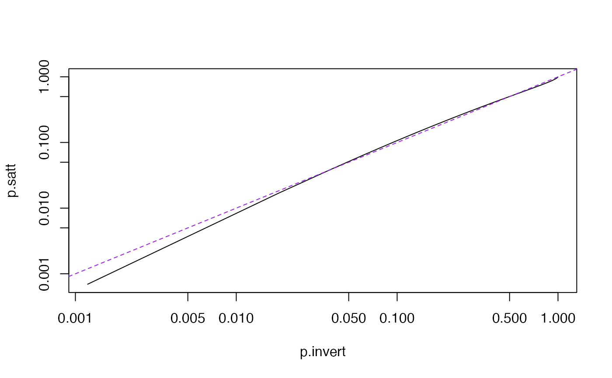
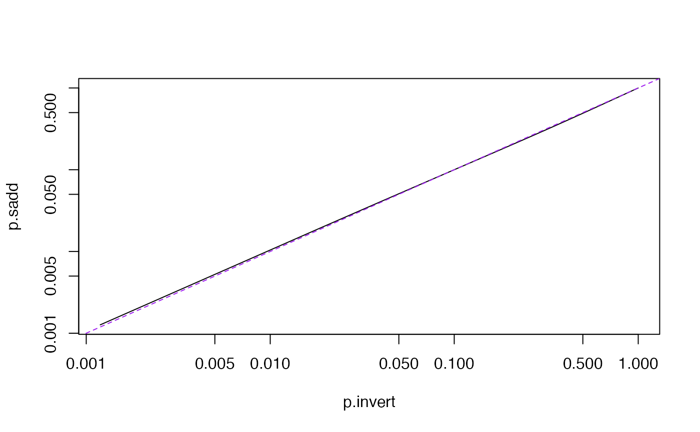

pchisqsum.RdThe distribution of a quadratic form in p standard Normal variables is a linear combination of p chi-squared distributions with 1df. When there is uncertainty about the variance, a reasonable model for the distribution is a linear combination of F distributions with the same denominator.
Observed values
Vector of degrees of freedom
Vector of coefficients
Denominator degrees of freedom
lower or upper tail?
See Details below
arguments to pchisqsum
Vector of cumulative probabilities
The "satterthwaite" method uses Satterthwaite's
approximation, and this is also used as a fallback for the other
methods. The accuracy is usually good, but is more variable depending
on a than the other methods and is anticonservative in the
right tail (eg for upper tail probabilities less than 10^-5).
The Satterthwaite approximation requires all a>0.
"integration" requires the CompQuadForm package. For
pchisqsum it uses Farebrother's algorithm if all
a>0. For pFsum or when some a<0 it inverts the
characteristic function using the algorithm of Davies (1980).
These algorithms are highly accurate for the lower tail probability, but they obtain the upper tail probability by subtraction from 1 and so fail completely when the upper tail probability is comparable to machine epsilon or smaller.
If the CompQuadForm package is not present, a warning is given
and the saddlepoint approximation is used.
"saddlepoint" uses Kuonen's saddlepoint approximation. This
is moderately accurate even very far out in the upper tail or with some
a=0 and does not require any additional packages. The relative error
in the right tail is uniformly bounded for all x and decreases as p
increases. This method is implemented in pure R and so is slower than
the "integration" method.
The distribution in pFsum is standardised so that a likelihood
ratio test can use the same x value as in pchisqsum.
That is, the linear combination of chi-squareds is multiplied by
ddf and then divided by an independent chi-squared with
ddf degrees of freedom.
Chen, T., & Lumley T. (2019). Numerical evaluation of methods approximating the distribution of a large quadratic form in normal variables. Computational Statistics and Data Analysis, 139, 75-81.
Davies RB (1973). "Numerical inversion of a characteristic function" Biometrika 60:415-7
Davies RB (1980) "Algorithm AS 155: The Distribution of a Linear Combination of chi-squared Random Variables" Applied Statistics,Vol. 29, No. 3 (1980), pp. 323-333
P. Duchesne, P. Lafaye de Micheaux (2010) "Computing the distribution of quadratic forms: Further comparisons between the Liu-Tang-Zhang approximation and exact methods", Computational Statistics and Data Analysis, Volume 54, (2010), 858-862
Farebrother R.W. (1984) "Algorithm AS 204: The distribution of a Positive Linear Combination of chi-squared random variables". Applied Statistics Vol. 33, No. 3 (1984), p. 332-339
Kuonen D (1999) Saddlepoint Approximations for Distributions of Quadratic Forms in Normal Variables. Biometrika, Vol. 86, No. 4 (Dec., 1999), pp. 929-935
x <- 2.7*rnorm(1001)^2+rnorm(1001)^2+0.3*rnorm(1001)^2
x.thin<-sort(x)[1+(0:50)*20]
p.invert<-pchisqsum(x.thin,df=c(1,1,1),a=c(2.7,1,.3),method="int" ,lower=FALSE)
p.satt<-pchisqsum(x.thin,df=c(1,1,1),a=c(2.7,1,.3),method="satt",lower=FALSE)
p.sadd<-pchisqsum(x.thin,df=c(1,1,1),a=c(2.7,1,.3),method="sad",lower=FALSE)
plot(p.invert, p.satt,type="l",log="xy")
abline(0,1,lty=2,col="purple")

plot(p.invert, p.sadd,type="l",log="xy")
abline(0,1,lty=2,col="purple")

pchisqsum(20, df=c(1,1,1),a=c(2.7,1,.3), lower.tail=FALSE,method="sad")
#> [1] 0.009519523
pFsum(20, df=c(1,1,1),a=c(2.7,1,.3), ddf=49,lower.tail=FALSE,method="sad")
#> [1] 0.01322202
pFsum(20, df=c(1,1,1),a=c(2.7,1,.3), ddf=1000,lower.tail=FALSE,method="sad")
#> [1] 0.009688087